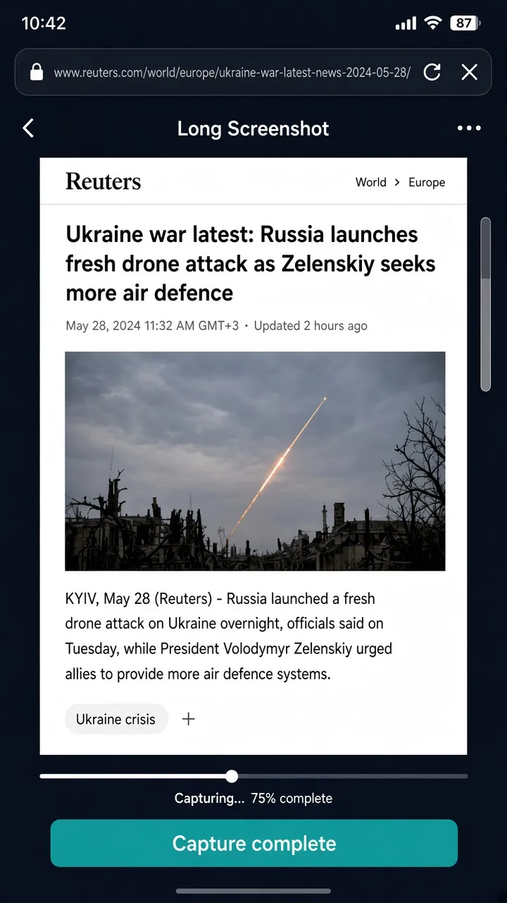

In the app
Need the whole article or a long chat thread? Long screenshot scrolls and stitches the page into one tall image you can save or share.

Also in XBrowser · Capture
Need the whole article or a long chat thread? Long screenshot scrolls and stitches the page into one tall image you can save or share.
Need the whole article or a long chat thread? Long screenshot scrolls and stitches the page into one tall image you can save or share.

Long screenshot captures content above and below the viewport, then opens the same editor flow so you can crop and save the result.
Product pages, terms of service, message threads, or any layout that does not fit one screen—without third-party stitch apps.
XBrowser’s core is zero-trust Spaces. Screenshot, editor, Watch Later, and Split View sit on top of that isolation.
Download on the App Store